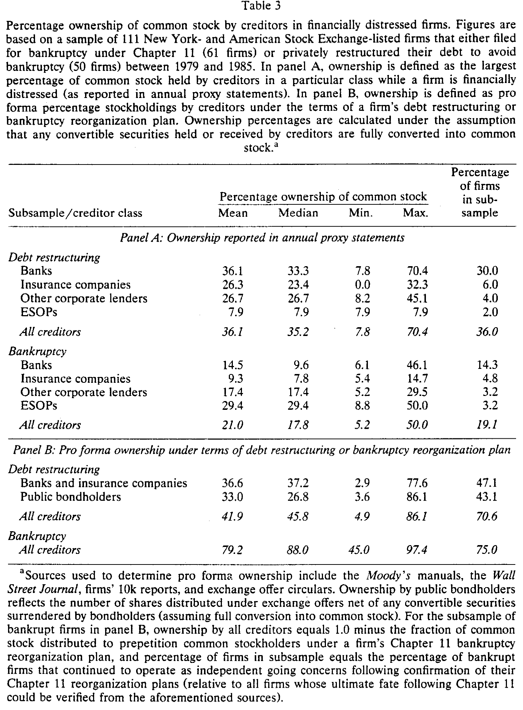
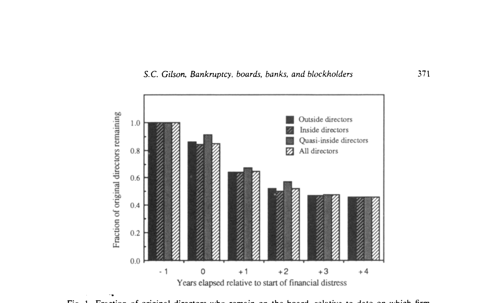
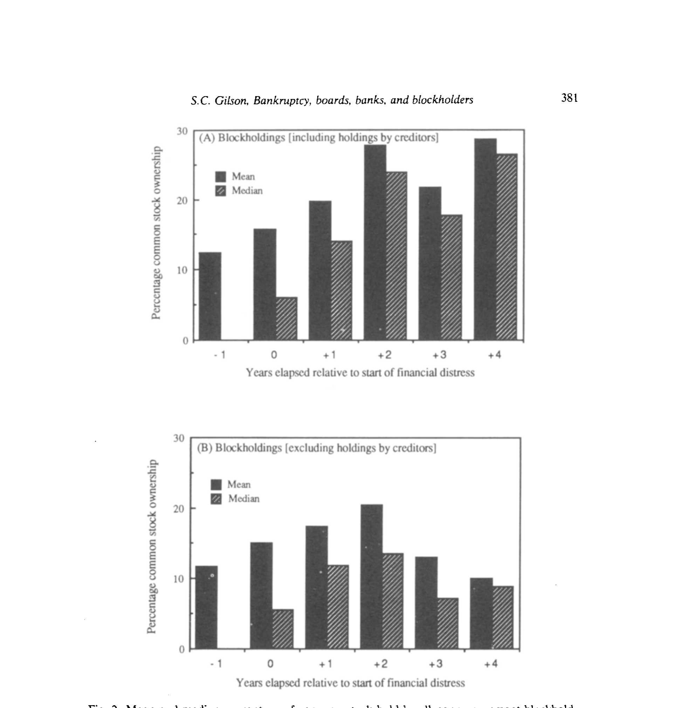
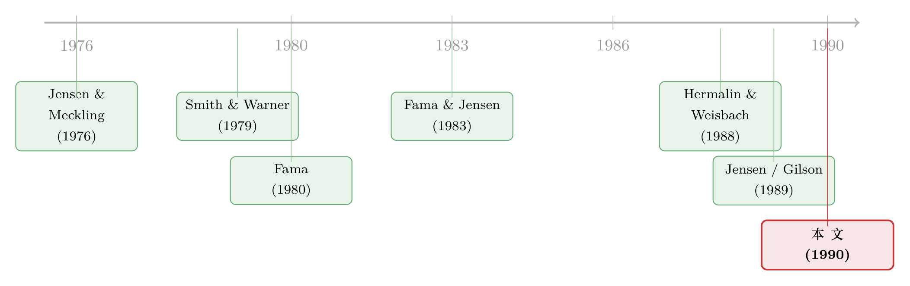

违约那天，谁悄悄接管了这家公司？
本文读的是 Gilson (1990, Journal of Financial Economics)：在 111 家 1979–1985 年间陷入严重财务困境的上市公司里，违约并不是「债主把资产搬空」这么简单——银行平均拿走 36% 的普通股、坐进董事会，重组结束时只有 46% 的原董事还在位、43% 的 CEO 还没走，股权向大股东集中、远离内部人。一句话：公司违约，本质上是一次控制权的重新分配——而重组后的困境公司，越来越像一家杠杆收购（LBO）。
1 一个被教科书简化掉的问题
打开任何一本公司金融教科书，讲到 财务困境 (financial distress) 那一章，你都会读到一句轻飘飘的话：公司一旦违约，资产就「整体转移」给债权人。
这句话听上去天经地义，可它其实把最有意思的一段情节一笔带过了。资产转移给债权人——具体是怎么转移的？谁来开董事会？谁说了算？原来的管理层、原来的股东，去哪儿了？ 我们对资本结构里「破产成本」的理论谈得头头是道〔Masulis (1988)、Jensen (1988)〕，可对一家公司真正违约之后内部发生了什么，几乎一无所知。模型里假设「债权人接管了破产企业的资产」，但债权人实际扮演的角色，从来没有人系统地记录过。
这正是 Gilson (1990) 想要回答的问题。它不是一篇讲模型的论文，而是一次彻头彻尾的「现场勘验」：把镜头对准一批正在违约、正在重组的公司，一年一年地数清楚——董事会里坐着谁、股东名册上写着谁、银行手里攥着多少股票。
标题里那四个 B——Bankruptcy（破产）、Boards（董事会）、Banks（银行）、Blockholders（大股东）——就是这次勘验的四条线索。而把它们串起来的，是一个朴素却被长期忽视的洞见：违约，重新分配了对公司资源的支配权。
2 怎么找到「正在出事」的公司
要研究违约的公司，第一道坎是：没人替你列好名单。美国并没有一份系统的「违约/破产公司」公开记录。
作者的办法很巧。首先，他假设「股价跌得最惨的那批公司」里，一定密集地藏着财务困境的公司。于是对 1979–1984 的每一年，他把纽交所（NYSE）和美交所（Amex）上所有公司，按过去三年的累计原始股票收益率排序，取最差的 5% 作为一个候选层。接着，他翻《华尔街日报》（WSJ）索引，逐家去查：这家公司在前后五年里，有没有被提到「违约、破产，或试图在破产之外重组债务」？有，就留下。再用 Moody's 手册、10-K、标普债券指南、CCH 的 Capital Changes Reporter 反复核对。
这样筛出 150 家，最后因为缺少足够的代理声明（proxy statement）和 10-K 来追踪至少一年的董事会或持股变化，剔掉 39 家，最终样本 111 家：其中 61 家依《破产法》第 11 章（Chapter 11）申请破产，50 家在破产之外私下重组了债务。
这里有个定义上的关键。什么叫「债务重组」？作者沿用 Gilson (1989) 的口径：只要债务合同满足以下之一就算——(i) 削减承诺的本息；(ii) 展期；(iii) 给债权人股权（普通股或可转换证券）。而且重组的目的必须是为了规避违约或破产。
这个样本有个不能忽视的「出身」：它是从股价跌得最惨的 5% 里挑出来的。好处是几乎确保你抓到的是真·重度困境；代价是它会系统性地漏掉那些「现金流只小幅下滑、却主动高杠杆」的公司。Jensen (1989a, b) 恰恰认为，高杠杆的一个好处就是让烂公司更早违约、更早被纠偏——而这类公司，可能正好被这个抽样方式排除在外。
样本公司的画像也值得一记：它们普遍偏小（资产账面值中位数仅 $74.8 百万，而 Hermalin and Weisbach (1988) 的 NYSE 样本中位数是 $12 亿），高杠杆（总负债/资产均值 0.87），银行债比公开债多（银行债/总负债均值 0.29），而且亏得惊人——重组/破产前三年的年均原始股票收益率是 −34.3%，市场调整后 −59.0%，行业调整后 −52.3%。从困境开始到化解，破产平均要 21.9 个月，私下重组平均 17.9 个月。
3 银行，悄悄变成了大股东
勘验的第一站，是债权人。
接着，一个自然的问题是：所谓「债权人控制」，是真的握有控制权，还是纸面上的说法？Gilson 的答案直接而有力——在大约四分之三的样本公司里，银行和其他债权人在重组或重整方案中拿到了大宗有投票权的股票。平均而言，银行拿走了公司 36% 的普通股。
表 3 把这件事拆得很细，分两个口径看。Panel A 是代理声明里披露的「困境期间某类债权人持有的最大持股比例」；Panel B 是重组/重整方案条款下的 pro forma（形式上）持股。

Table 3
在私下重组的公司里，全体债权人持股均值 36.1%、中位数 35.2%，其中绝大部分归银行所有，银行单独的持股均值就有 36.1%、中位数 33.3%，最高一家高达 70.4%。破产公司里这个数字略低（全体债权人均值 21.0%、中位数 17.8%），但 Panel B 揭示了更惊人的一面：在能查到 Chapter 11 最终结果的破产案里，75% 让债权人持有了存续公司的股权，全体债权人 pro forma 平均拿走 79.2%、中位数 88.0% 的股权。公开债持有人也不含糊，通过交换要约平均换得 33.0% 的普通股，极端的一例达到 86.1%。
但这里藏着一个反转。你以为银行会乐于长期当大股东？恰恰相反。Glass-Steagall 法第 16 条、银行控股公司法、美联储 Regulation Y 都禁止银行长期持有非银行企业的大量股票；即便在债务重组/重整中获得了豁免，这些股票也必须在大约两年内卖掉。更微妙的是，银行一旦在重组中拿了股权，就更可能被破产法视为「内部人」——如果公司在一年内申请破产，银行甚至可能被迫退还所得（所谓「可撤销偏颇清偿」）。
换句话说，银行的控制力真实存在却往往短命。它不是来当永久股东的，它是来「过一道手、盯一阵子」的。这恰恰说明：债权人的影响力，不只来自股权和董事席位，还来自债务契约里那些限制投资和融资政策的限制性条款（restrictive covenants）。关于「债主违约后究竟把资源搬去了哪里」这条线，后来 Gilson 这一脉发展出了更精细的研究（可参见《把公司这个「黑箱」拆开：契约一违约，债主把资源搬去了哪里》）。
4 董事会的「大换血」
第二站，董事会。
如果说银行是从外部「挤」进来的监督者，那么董事会就是从内部「换」出来的。然后，与银行监督同时发生的，是董事会内部一场不动声色的大清洗。
数字是这样的：在困境开始前坐在董事会上的董事，到公司走出破产或与债权人私下了结时（通常不到两年），平均只剩 46% 还在位；CEO 也只有 43% 还没走。 董事会的平均规模在缩小，而新进来的董事，更多是带着「管理困境公司」的特殊技能或兴趣的人——投资银行家、重组专家（workout specialists）。
图 1 把这种流失画成了一条随时间下滑的曲线：相对违约/重组起始日，留任的原董事比例一路走低。

Figure 1: Fraction of original directors who remain on the board. relative to date on which firm
更耐人寻味的是离场之后的故事。那些从困境公司辞职的董事，此后在其他公司担任董事的次数显著减少。 这一点呼应了 Fama (1980)、Fama and Jensen (1983) 的经理人市场（managerial labor market）逻辑：董事的声誉是一种被市场定价的资本，把公司管到违约，这份声誉会贬值。Weisbach (1988) 与 Warner, Watts and Wruck (1988) 关于业绩与高管更替的发现，在这里以「董事席位」的形式得到了延伸——困境不只换掉 CEO，它顺着整张董事会名单一路扫过去（关于 CEO 与困境的更专门研究，正是作者自己的 Gilson (1989)）。
5 股权重新洗牌：大股东进，内部人退
第三站，股东名册。
董事会在换血的同时，股权结构也在悄悄重排。与此同时，非管理层大股东（nonmanagement blockholders）持有的普通股比例急剧上升，而董事和高管（内部人）手里的股票比例下降。
图 2 显示了非管理层大股东持股的均值与中位数如何随困境进程抬升；图 3 则是镜像的另一半——内部人持股的滑落。

Figure 2: Mean and median percentage of common stock held by all nonmanagement blockhold-
这两条相反方向的曲线，合在一起讲了同一个故事：控制公司剩余索取权（residual claims）的人变了。 钱和投票权从分散的散户、从被稀释的内部人手里，流向了少数能真正盯着公司的大块头。而与此形成对照的是，样本里几乎没有公司被收购——这场控制权的重排，主要发生在公司内部，而不是通过外部的并购市场完成。这一点很重要：困境公司的治理纠偏，靠的不是「敌意收购」这把外部的刀，而是债权人和大股东这两台内部的引擎。
6 于是，一家困境公司长得越来越像 LBO
把四条线索摆在一起看，真正关键的一步才浮现出来。
银行进场当大股东、投资银行家进董事会、股权高度集中、债务契约把管理层的手脚捆住——这套组合，你是不是觉得在哪儿见过？
Jensen (1989b) 笔下典型的 杠杆收购 (leveraged buyout, LBO) 公司，正是：高度集中的股权、积极参与制定和执行公司政策的银行债权人、以及由投资银行家和专业人士组成的、专门经营高杠杆公司的董事会。Gilson 的发现于是水到渠成地接上了一个更大的命题：这些被迫陷入困境的公司，自发地演化出了一套和 LBO 高度相似的治理结构。
这意味着什么？意味着 LBO 那套「高杠杆 + 集中股权 + 强势债权人监督」的安排，可能并非私募基金的独家发明，而是高杠杆环境下公司治理的一种自然解。换言之，杠杆本身——而非某种特定的所有制形式——可能才是决定「公司该如何被组织和治理」的深层力量。
这就是这篇看似「只在描述」的论文真正的野心所在：它用一批违约公司的体检数据，给 Jensen 那个关于「债务作为治理机制」的宏大猜想，提供了一份来自困境一线的实证注脚。它讲的从头到尾只有一件事——违约重新分配了控制权，而这种分配，长得很像 LBO。
文献脉络
要理解这篇论文的位置，得把它放回一条从「代理问题」长出来的主干上。
源头是 Jensen and Meckling (1976)：所有权与控制权分离带来代理成本，债务既是约束、也是冲突的来源（这条线五十年后仍在被重读，见《债务这副药，为什么不能全吃？——重读 Jensen 和 Meckling 五十年》）。接着，Smith and Warner (1979) 把债务契约里的条款讲透——债权人如何通过契约约束股东；Fama (1980) 与 Fama and Jensen (1983) 则把董事会、经理人市场作为治理机制纳入框架。

然后，实证一脉开始填充细节：Hermalin and Weisbach (1988) 研究董事会构成的决定因素，Weisbach (1988) 把外部董事与 CEO 更替联系起来。到了 1980 年代末，Jensen (1989a, b) 抛出「积极投资者、LBO 与破产的私有化」这一组观点，主张高杠杆是纠偏烂公司的好机制。而真正关键的一步，是作者自己的研究纲领：Gilson (1989) 先证明了财务困境如何冲走管理层，Gilson, John and Lang (1990) 研究了庭外私下重组的选择问题（见《庭外那条路：为什么有的公司能绕开破产法庭，有的不能》），而本文（Gilson 1990）则把镜头进一步拉宽，覆盖董事会、银行、大股东三条治理线，给「违约 = 控制权再分配」这个命题补上了最完整的一块拼图。
评论与延伸（Q&A + 研究方向）
(a) 几个可能的疑问
Q：「46% 的董事留任」听起来很吓人，但正常公司每两年董事会本来也会换一批人，这个流失率真的「异常」吗？
这是最该担心的问题。作者用了两道防线：一是严格的「计时约定」，把董事流失的观测窗口只框定在公司财务困境的那段时间（从重整方案获法院确认、或重组协议正式达成为终点），避免把「公司恢复健康后」的正常更替算进来；二是横向对照——离场董事在别处的董事席位显著减少，这种「声誉受损」的特征是普通退休轮换难以解释的。但严格说，论文缺一个匹配的健康公司对照组，所以「46%」更应读作「困境期内的实际留存」，而非干净的因果性「超额流失」。
Q：破产（Chapter 11）和私下重组，债权人拿到的股权差这么多（79% vs 42%），是为什么？
论文老实承认「这里不深究原因」。但直觉上，进入 Chapter 11 意味着情况更糟、谈判破裂、原股东的剩余价值更薄，所以债权人吃掉的股权份额更大；私下重组往往发生在尚有回旋余地时，原股东能保住更多。这恰恰也连着「为什么有的公司能庭外和解、有的只能进法庭」这个选择问题——而庭外那条路有时反而对股东更慷慨（见《破产之外的那条暗路》）。
Q：银行既然两年内必须把股票卖掉，那「银行控制」是不是被高估了？
不能只看股权。论文特别强调，银行的影响力有两个来源：股权+董事席位，以及债务契约里的限制性条款。后者不受 Glass-Steagall 的两年期限约束，可以持续约束公司的投资和融资政策。所以即便银行被迫减持，它通过契约施加的「监督」依然在场。把银行的影响等同于其持股比例，会系统性低估它的实际控制力。
Q：样本是从「跌得最惨的 5%」里挑的，这会不会让结论只适用于一小撮极端公司？
会有这个隐忧。作者自己也指出：这个抽样会漏掉那些「现金流只小幅下滑、却主动选择高杠杆」的公司，而这类公司恰恰是 Jensen 理论里「高杠杆让烂公司早违约」的主角。所以本文的结论对「重度困境」最有说服力，外推到「轻度困境 + 高杠杆」时要谨慎。
Q：把困境公司说成「像 LBO」，是不是有点牵强——毕竟一个是被迫的，一个是主动设计的？
论文的论证是结构上的相似，而非动机上的等同。相似点是可观察的：股权集中、银行积极、董事会专业化。作者想说的不是「困境公司就是 LBO」，而是「高杠杆这一共同条件，会催生相似的治理形态」——这是一个关于杠杆→治理的更一般命题，困境公司只是它的一个自然实验。
Q：既然控制权重排主要发生在内部，那「公司控制权市场」（并购）在困境治理里就不重要了吗？
至少在这个样本里，外部并购的角色很小——很少有公司被收购。这本身是个有意思的发现：它提示我们，困境公司的纠偏机制更依赖债权人和大股东这类「内部」力量，而不是敌意收购这把外部的刀。这与「破产即拍卖、即换帅」的硬规则世界（见《破产就拍卖、CEO 就下岗》）形成了有趣的对照。
(b) 几个可能的研究问题与提案
1. 债权人接管控制权之后，这家公司的债券二级市场流动性会怎么变？
【经济故事】当银行/大股东进场、信息开始向少数知情人集中，公司债的逆向选择程度可能上升，买卖价差走阔、流动性下降；但另一方面，控制权清晰化也可能降低不确定性、改善定价。两种力量方向相反，谁主导是实证问题。 【可行性】中。需要把 Gilson 式的困境/重组事件（可从 WSJ、Moody's、现代的 Capital IQ 重建）与 TRACE 的公司债成交数据对齐，做事件研究。难点在于困境期债券交易稀疏、报价噪声大——可借鉴「数零」的流动性度量思路（见《数不清的「零」》）。
2. 外资大股东在困境重组中的角色，和本土银行一样吗？
【经济故事】Gilson 的「银行变股东」机制深植于美国的 Glass-Steagall 制度环境。换到外资持有人占比高的市场，外资大股东可能因信息劣势、退出便利而表现得更像「用脚投票」而非「进场监督」，从而改变困境公司的治理路径。 【可行性】中。需要跨国的困境公司样本 + 持股人国籍数据（如各国披露的 beneficial ownership）。识别上可利用各国对银行持股、外资持股的法律差异做制度对照。这与「外资到底是不是蝗虫」的争论直接相关（见《外资真是「蝗虫」吗？》）。
3. 用现代数据（TRACE + 13F + 重组数据库）重做 Gilson，杠杆→治理的命题还成立吗？
【经济故事】1980 年代的制度环境（强势的银行、纸面披露）已大不相同：被动机构崛起、私募信贷（direct lending）成为困境融资的新主力。今天的困境公司，接管它的可能不是商业银行，而是信贷基金。治理形态会不会从「像 LBO」变成「像私募信贷组合」？ 【可行性】高。困境/重组样本可从 Capital IQ、Mergent、PACER 破产记录重建，机构持股用 13F，董事会用 BoardEx/ISS。识别上可比较「银行主导」与「非银私募主导」两类重组的治理结果差异。私募信贷接手「借不到钱的公司」这条线已有研究（见《银行撤退之后，是谁悄悄接住了那批「借不到钱」的公司？》）。
4. 困境期董事「声誉受损」的因果证据。
【经济故事】本文发现离场董事此后席位减少，但这可能是「能力差」与「踩雷」的混合。能不能把「公司碰巧违约」与「董事本人能力」分开？ 【可行性】中。可利用「同一董事同时在多家公司任职、其中一家因外生冲击违约」的设定，做董事固定效应 + 困境冲击的交互，分离出纯粹的「声誉传染」。数据用 BoardEx 的董事-公司面板。
参考文献
- Fama, E. (1980). Agency problems and the theory of the firm. Journal of Political Economy 88(2), 288–307.
- Fama, E. and M. Jensen (1983). Separation of ownership and control. Journal of Law and Economics 26(2), 301–325.
- Gilson, S. (1989). Management turnover and financial distress. Journal of Financial Economics 25(2), 241–262.
- Gilson, S. (1990). Bankruptcy, boards, banks, and blockholders: Evidence on changes in corporate ownership and control when firms default. Journal of Financial Economics 27(2), 355–387.
- Gilson, S., K. John and L. Lang (1990). Troubled debt restructurings: An empirical study of private reorganization of firms in default. Journal of Financial Economics 27(2), 315–353.
- Hermalin, B. and M. Weisbach (1988). The determinants of board composition. RAND Journal of Economics 19(4), 589–606.
- Jensen, M. (1989a). Active investors, LBOs, and the privatization of bankruptcy. Journal of Applied Corporate Finance 2(1), 35–44.
- Jensen, M. (1989b). Eclipse of the public corporation. Harvard Business Review Sep/Oct, 61–74.
- Jensen, M. and W. Meckling (1976). Theory of the firm: Managerial behavior, agency costs and ownership structure. Journal of Financial Economics 3(4), 305–360.
- Masulis, R. (1988). The Debt/Equity Choice. Ballinger, Cambridge, MA.
- Smith, C. and J. Warner (1979). On financial contracting: An analysis of bond covenants. Journal of Financial Economics 7(2), 117–161.
- Warner, J., R. Watts and K. Wruck (1988). Stock prices and top management changes. Journal of Financial Economics 20, 461–492.
- Weisbach, M. (1988). Outside directors and CEO turnover. Journal of Financial Economics 20, 431–460.